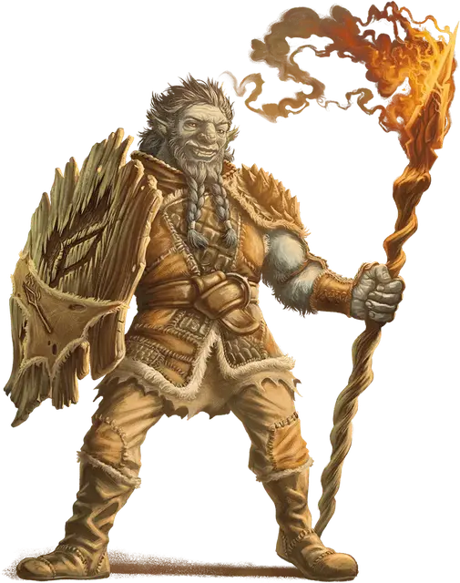

Фирболг-первобытный страж
Firbolg Primeval Warden
Средний Гуманоид (Друид), любое мировоззрение

Класс Доспеха 16 (шкурный доспех, щит)
Хиты 65 (10к8 + 20)
Скорость 30 футов
| мод | спас | ||
|---|---|---|---|
| СИЛ | 16 | +3 | +3 |
| ЛОВ | 14 | +2 | +2 |
| ТЕЛ | 14 | +2 | +2 |
| мод | спас | ||
|---|---|---|---|
| ИНТ | 12 | +1 | +3 |
| МДР | 16 | +3 | +5 |
| ХАР | 11 | +0 | +0 |
Навыки Восприятие +7, Медицина +5, Природа +3
Чувства пассивное Восприятие 17
Языки Общий, Великаний, Друидический
Опасность 4 (1100 опыта)
Бонус мастерства +2
Действия
Мультиатака. Фирболг совершает две атаки Копьём или Длинным огненным копьём.
Копьё. . Рукопашная или дальнобойная атака оружием: +5 к попаданию, досягаемость 5 фт. или дистанция 20/60 футов, одна цель. Попадание: 6 (1к6 + 3) колющего урона плюс 9 (2к8) урона огнём.
Длинное огненное копьё. . Дальнобойная атака заклинанием: +5 к попаданию, дистанция 120 футов, одно существо. Попадание: 14 (2к10 + 3) урона огнём.
Использование заклинания. Фирболг накладывает одно из следующих заклинаний, используя Мудрость в качестве базовой характеристики (Сл спасброска от заклинания 13):
• Неограниченно: опутывание [entangle], разговор с животными [speak with animals], разговор с растениями [speak with plants];
• 1/день каждое: общение с природой [commune with nature] (накладывается действием), обнаружение магии [detect magic], маскировка [disguise self].
Бонусные действия
Незримая поступь (2/день). Фирболг волшебным образом становится невидимым до начала своего следующего хода, пока не совершит бросок атаки или пока не заставит кого-то совершить спасбросок.
Описание
Дальние родственники великанов, первые фирболги бродили по первобытным лесам мультивселенной, и магия этих лесов сплелась с душами фирболгов. Спустя века эта магия всё ещё звенит внутри фирболгов.
Фирболгов часто привлекает служить Дианкастре и Хьяти или подражание им. Врожденная магия фирболгов, заключающаяся в скрытности и хитрости, перекликается с коварной находчивостью Дианкастры. Традиционный акцент на общности и гармонии побуждает многих фирболгов посвятить себя служению Хьяти.
Фирболг-первобытный страж
Подобно великанам жрецам Хьяти, фирболги, служащие ей, выполняют две различные роли, параллельные двойственной природе Хьяти. Дома первобытные стражи следят за очагами и обучают молодежь. Первобытные стражи, патрулирующие границы кланов фирболгов, являются свирепыми охотниками, которые защищают от внешних угроз и вторжений.